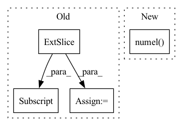

Pattern ID :7776
Before Change
sum_loss = 0.0
num_pred = 0
for logits, idx in zip(roll_logits, roll_idx):
roll_targets = targets[..., idx : idx + H]
ce = F.cross_entropy(logits, roll_targets, reduction="sum")
sum_loss = sum_loss + ce
num_pred = num_pred + roll_targets.numel()
return sum_loss / num_predAfter Change
logits = roll_logits.reshape(R * B, Q, H) // (R*B,Q,H)
targets = targets.unfold(-1, H, 1).permute(1, 0, 2) // (W,B,H)
targets = targets[roll_idx].reshape(R * B, H) // (R*B,H)
return torch.sum(logits.argmax(1) == targets) / targets.numel()
In pattern: SUPERPATTERN
Frequency: 3
Non-data size: 4
Instances Fragment ID: 27789562
Project Name: cheind/autoregressive
Commit Name: bd8f0e0dfd5d3fa7abf07c9b48bc4b58604e79f9
Time: 2021-11-16
Author: cheind@profactor.at
File Name: autoregressive/metrics.py
M Class Name: AnonimousClass
N Class Name: AnonimousClass
M Method Name: rolling_origin_accuracy(3)
N Method Name: rolling_origin_accuracy(3)
M Parent Class:
N Parent Class:
M File Name: autoregressive/metrics.py
N File Name: autoregressive/metrics.py
M Start Line: 84
M End Line: 92
N Start Line: 89
N End Line: 93
Before Change
frame_ix.unsqueeze(1),
self.id[ix].unsqueeze(1)), dim=1)
else:
grand_matrix = torch.cat((self.xyz[ix, :] ,
self.phot[ix].unsqueeze(1),
frame_ix.unsqueeze(1)), dim=1)
After Change
raise ValueError("No Id is not supported any more.")
The first frame is assumed to be 0. If it"s negative go to the lowest negative.
if frame_ix.numel() != 0:
ix_f = min(0, frame_ix.min())
if self.num_emitter != 0: Fragment ID: 27789568
Project Name: turagalab/decode
Commit Name: bddf5aec0672cd591e0c2673951126d3826781a5
Time: 2019-03-06
Author: gitdev@LRM.photo
File Name: deepsmlm/generic/emitter.py
M Class Name: EmitterSet
N Class Name: EmitterSet
M Method Name: split_in_frames(3)
N Method Name: split_in_frames(3)
M Parent Class:
N Parent Class:
M File Name: deepsmlm/generic/emitter.py
N File Name: deepsmlm/generic/emitter.py
M Start Line: 49
M End Line: 77
N Start Line: 74
N End Line: 108
Before Change
self.samples += num_batches
for i in range(num_batches):
for j in range(num_labels):
intersection = (
(y_pred[i, j, :, :] .unsqueeze(0) & y_true[i, j, :, :].unsqueeze(0))
.float()
.sum((1, 2))
)After Change
union = (y_pred_local | y_true_local).float().sum()
correct = (y_pred_local == y_true_local).int().sum()
total = y_true_local.numel()
trues = y_pred_local.float().sum() + y_true_local.float().sum()
self.iou_per_class[j] += 1 if union == 0 else (intersection / union)
self.f1_score_per_class[j] += ( Fragment ID: 27789570
Project Name: biasvariancelabs/aitlas
Commit Name: e11bf3d1eaac800ad330870791cd1f5e251967bd
Time: 2021-09-17
Author: ivan.kitanovski@gmail.com
File Name: aitlas/base/metrics.py
M Class Name: SegmentationRunningScore
N Class Name: SegmentationRunningScore
M Method Name: update(3)
N Method Name: update(3)
M Parent Class: RunningScore
N Parent Class: RunningScore
M File Name: aitlas/base/metrics.py
N File Name: aitlas/base/metrics.py
M Start Line: 248
M End Line: 260
N Start Line: 256
N End Line: 269